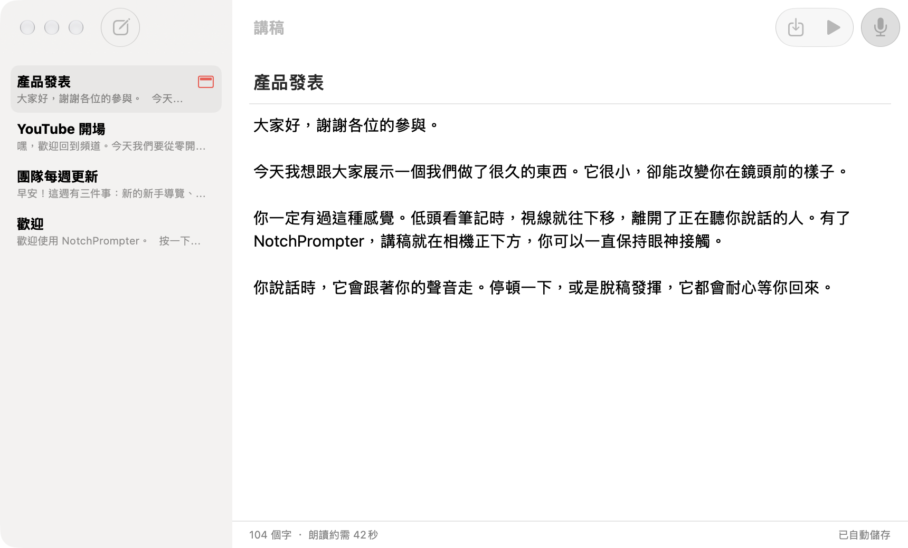
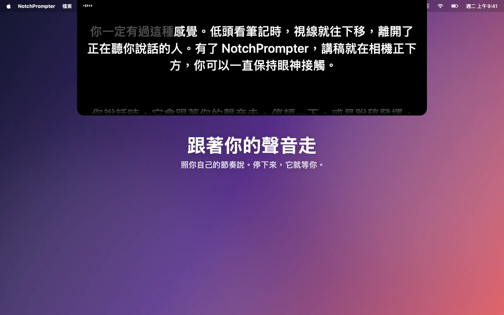
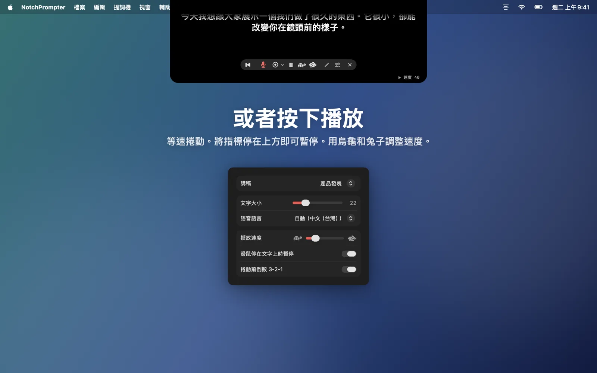
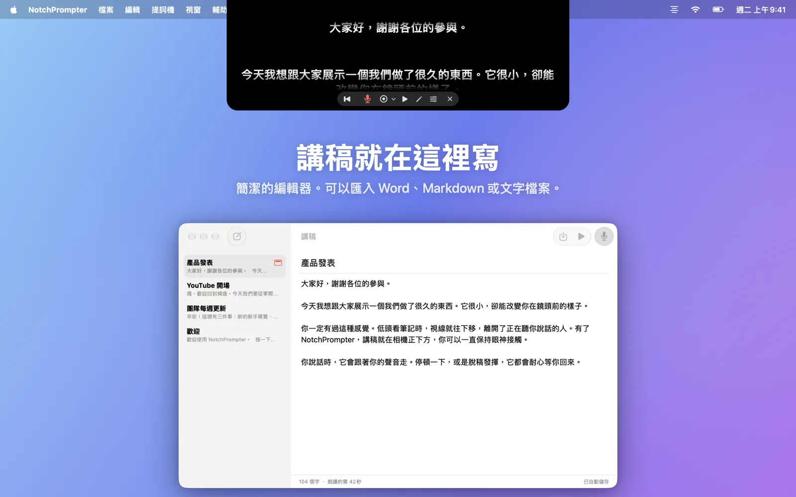
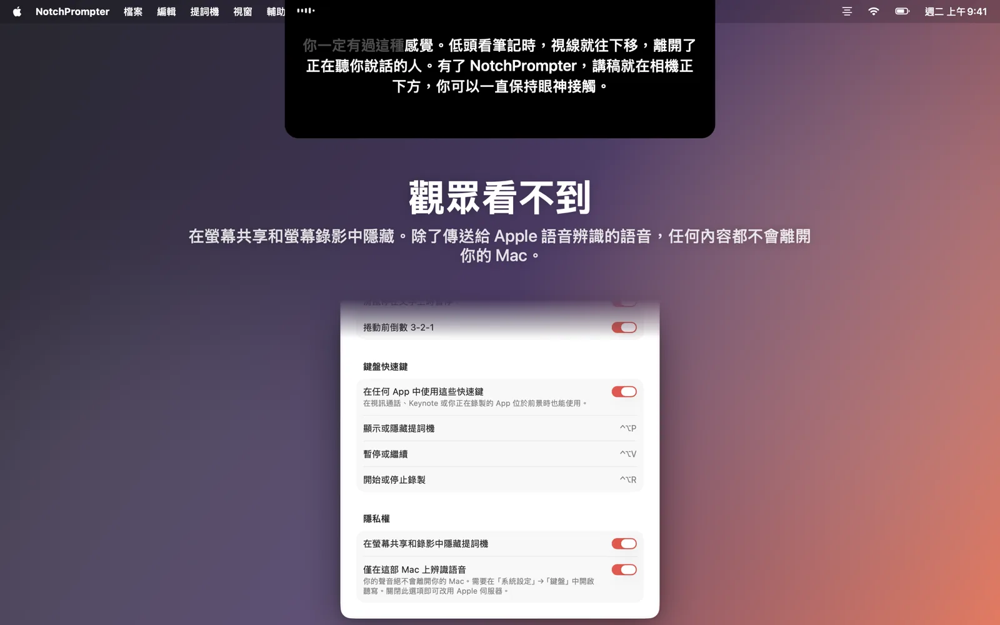
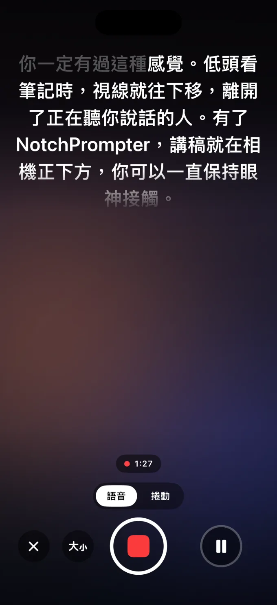

邊讀講稿，邊保持眼神接觸
NotchPrompter 把講稿放在相機正下方，並跟著你的聲音走。任何語言都行，跳著讀也沒問題，而且完全在 Mac 上執行。
免費且開放原始碼。適用於 macOS 15 Sequoia 或以後版本。在有瀏海的 MacBook 上效果最好，頂端有相機的任何 Mac 也都能用。
實際看看
朗讀、停頓、跳著讀，提詞機都跟得上你。
該有的都有，礙事的全沒有。
相機下方的一塊黑色小面板、幾個清楚的按鈕、一個用來寫講稿的小編輯器，還有一個錄影按鈕。
跟著你的聲音走
按下麥克風，開口說話。接下來的字永遠在相機正下方，說過的字會逐漸淡出。
任何語言，自動辨識
NotchPrompter 會辨識講稿使用的語言，並用這個語言來聆聽。支援英文、挪威文、德文、西班牙文、日文等數十種語言。
跳著讀也跟得上
跳過一句、換個字、說聲「呃」都沒關係。它會找到你讀到哪裡，和你一起往前跳。你停下來，它就等著。
或者按下播放
3-2-1 倒數後平順捲動。將指標停在上方即可暫停，用烏龜和兔子按鈕調整速度。
內建編輯器
把所有講稿存放在一處，或以 Markdown 檔案的形式儲存在任何編輯器或 AI 助理都能使用的檔案夾中。可以匯入 Word、RTF 或文字檔案。
錄下自己
朗讀時可以錄下相機、螢幕，或兩者一起。每一次都會儲存在「影片」檔案夾中，字幕也會在你的 Mac 上產生。
觀眾看不到
在螢幕共享、截圖和螢幕錄影中都會隱藏。只有你自己看得到。
完全在 Mac 上執行
語音在你的 Mac 上辨識，而不是在雲端。不需要帳號，沒有追蹤。錄影留在你的 Mac 上，講稿只透過你自己的 iCloud 同步。
講稿，按一下就到
按一下提詞機中的鉛筆即可打開編輯器。選一份講稿，按下麥克風，開始說話。
- 撰寫或貼上講稿，或匯入檔案。
- 按下語音跟讀。
- 看著相機說話。

為鏡頭而生
視訊通話、YouTube、課程、線上研討會和提案簡報。




iPhone 版也來了
iPhone 版 NotchPrompter 把講稿放在前置相機正下方，跟隨你的聲音，並拍下你自己。可以剪輯拍攝內容、加入字幕，然後儲存到「照片」中。
免費使用，沒有浮水印，也不限制拍攝次數。提詞器、聲音跟隨、錄影、剪輯和字幕全部免費。如果你想支持這項工作，可以購買 Pro。Pro 增加 1080p 和 4K、音樂、旁白以及更多編輯工具，可按月、按年付費，或一次買斷。
iPhone App 並非開放原始碼。它使用與 Mac App 相同的開放原始碼語音引擎，Pro 的收入也有助於讓 Mac App 保持免費。即將在 App Store 推出，適用於 iOS 18 或以後版本。

常見問題
真的免費嗎？
是的。Mac 版 NotchPrompter 免費且開放原始碼，採用 MIT 授權。沒有廣告，沒有訂閱，不需要帳號。原始碼放在 GitHub 上，你可以在那裡回報錯誤、建議功能或參與開發。
iPhone 版 NotchPrompter 同樣免費使用，也沒有浮水印。如果你想支持這個專案，可以購買 Pro，它會增加更多影片和編輯工具。了解更多。
沒有瀏海也能用嗎？
可以。在沒有瀏海的 Mac 上，提詞機會掛在螢幕頂端、選單列下方，依然很靠近相機。
語音跟隨支援哪些語言？
數十種，包括英文、挪威文、德文、法文、西班牙文、中文和日文。NotchPrompter 會辨識講稿使用的語言並用它來聆聽，所以你不需要做任何設定。你也可以在設定中選擇其他語言。
分享螢幕時，別人會看到提詞機嗎？
不會。依照預設，它在螢幕共享、截圖和螢幕錄影中都會隱藏。如果想顯示它，可以在設定中關閉這個選項。
有任何內容會傳到雲端嗎？
不會。語音在你的 Mac 上辨識（需在系統設定中開啟聽寫），NotchPrompter 也沒有伺服器。語音跟隨絕不儲存音訊。拍攝內容只會儲存在你自己的「影片」檔案夾中。如果你使用 iCloud，講稿會透過你自己的 iCloud 帳號同步。請閱讀隱私權政策。
有哪些鍵盤快速鍵？
先按一下提詞機，然後：空白鍵 播放/暫停，V 語音，C 錄影，R 回到頂端，↑ ↓ 速度，+ − 文字大小，E 編輯器，Esc 停止。
在任何 App 中：⌃⌥P 顯示或隱藏提詞機，⌃⌥V 暫停或繼續，⌃⌥R 錄影。